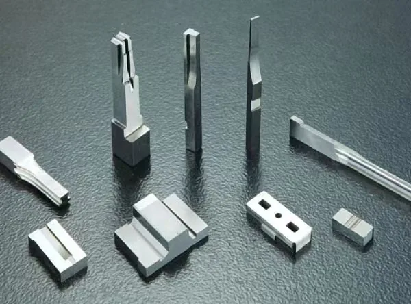

Technical Blog
Advantages of Tungsten Carbide Parts
A practical guide to selecting tungsten carbide for wear-resistant punches, inserts and precision tooling components.

When Tungsten Carbide Is Useful
Tungsten carbide is used for wear-resistant tooling such as connector punches, precision stamping inserts, guide components and mold wear parts. Its value depends on the working conditions: abrasion, impact, edge geometry and support can lead to different material choices.
Carbide should not be selected only because it is harder than a familiar steel. Define the failure or performance requirement that matters to the application. A change of grade or process does not establish a tool-life improvement without appropriate application evidence.
Wear Resistance, Edge Condition and Support
Under suitable abrasive or repeated-contact conditions, carbide can help preserve the working geometry. An edge that rounds or wears can change the result produced by a punch or insert. However, a harder material does not remove the need to control impact, bending and stress concentrations.
Review the carbide component together with its holder and clamping arrangement. Thin unsupported sections, abrupt changes in shape and concentrated loads can increase chipping risk. Mark functional edges, press-fit regions and surfaces where an edge break is not permitted. The same nominal outline can behave differently when the grade or edge preparation changes.
Specify the Grade and Application
Carbide grades balance characteristics such as hardness and toughness. Jinyi Precision’s existing material information lists KD, EF, FD and RD series. A series name alone does not define every material property, so provide the exact grade specified for the part and state whether alternatives may be reviewed.
Useful application information includes the contact material, loading, current wear or failure mode and the surrounding support. If substitution is allowed, define the requirement it must meet. Do not assume that a material with a familiar name is interchangeable in every operating condition.
Machining Routes and Internal Corners
PG profile grinding, wire EDM, surface grinding and sinker EDM can have different roles in producing a carbide component. A ground working edge, a through-contour and a recessed cavity need separate access and inspection reviews. Ordinary milling may be limited by the material and feature geometry.
Internal corner radius is limited by wire diameter and EDM gap. If a drawing shows a tight internal corner, confirm the required radius against the proposed process or review whether a relief is acceptable. Do not interpret an illustrated sharp corner as a promise of zero-radius machining.
For a formed edge, see PG profile grinding for punches and inserts. For cavity access and material-specific EDM finish references, see the wire and mirror EDM discussion.
Surface Finish and Coating Allowance
Attach each finish requirement to a named face and process. Surface finish for PG precision grinding is reviewed for the relevant geometry, material and machining conditions. A PG finish requirement does not automatically apply to wire or mirror EDM surfaces.
A drawing may, for example, require a PG-ground profile with a critical tolerance of ±0.002 mm. The route and inspection method must be reviewed for that feature rather than extending the requirement to the whole part.
Where coating is required, define its relationship to the final dimensions and edge condition. Jinyi Precision’s existing information includes PVD, TiAlN and DLC coating options. Confirm the proposed scope and acceptance condition for the project; do not assume the same allowance or coating choice suits every component.
Inspection, Handling and Repeat Orders
Identify the profile, locating faces, thickness and positional relationships that control function. Inspection should follow the drawing datums and include the edge condition where it affects use. Packaging also matters: a finished edge can be damaged during cleaning, inspection, coating or transport.
For repeat tooling, retain the drawing revision, grade, agreed inspection method and any interchangeability requirements. If the objective is to address premature wear or chipping, share the operating conditions and the observed failure. This supports a focused grade and route review without inventing a guaranteed production result.
Related Guides and Capabilities
Send an Inquiry
Send drawings for review
Email your drawings directly, or use the form for an initial inquiry. Please include the material, quantity, critical tolerances, surface finish and required delivery date. You do not need to submit the form before emailing us.